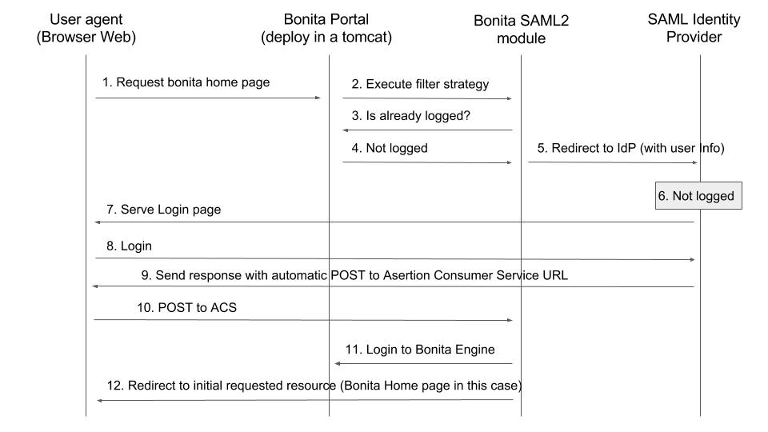

SAML SSO configuration
Bonita can be configured to use the SAML protocol to provide single sign-on (SSO), as long as you already have a SAML Identity Provider server up and running (IdP).
:::info Note: For Enterprise, Performance, Efficiency, and Teamwork editions only. :::
This information applies to a Bonita platform deployed from a bundle, not to the Engine launched from Bonita Studio.
<BUNDLE_HOME> refers to the root directory of the bundle.
SAML configuration is at tenant level. Each tenant can use a different authentication method (over SAML or not).
:::info Note: Bonita uses Keycloak as SAML Service Provider adapter. :::
SAML overview for Bonita
This is an overview that relates the steps required to integrate a bonita bundle with an SAML Identity Provider.

Here some details about the Bonita SAML2 module, it is composed of:
-
A servlet filter that intercept all the requests to bonita portal pages
It checks if the user is already logged in on Bonita
-
If already logged in => Allow the access
-
If not logged in => Redirect to IdP (with user info)
-
-
One Assertion Consumer Service ACS URL (technically this is also handled by the servlet filter through a different URL mapping
/saml),This service validates and process the SAML response :
-
Decode SAMLResponse
-
Check if the answer is valid (certificate, date, origin)
-
Extract the username from it (NameId or subject attribute)
-
Connect to bonita using username
-
Redirect to the initial requested resource (relayState)
-
warning + Bonita "username" should match the NameId or one attribute of the subject returned by the IdP in the response. If some users need to be able to log in without having an account on the IDP, you can authorize it by activating an option in the file
authenticationManager-config.properties(see 2. below). Users will then be able to log in using the portal login page (/login.jsp) provided they have a bonita account and their password is different from their username. -
== Configure Bonita Bundle for SAML
-
-
You need to execute the following actions in the folder of each tenant for which you want to support authentication over SAML.
If you want this configuration to also apply to each tenant created later, make sure to also perform those actions in the template tenant configuration folder: <BUNDLE_HOME>/setup/platform_conf/current/tenant_template_* (if you have not started the Bonita bundle yet, the files are located in <BUNDLE_HOME>/setup/platform_conf/initial/tenant_template_*)
The bundle already contains the files needed to use SAML with Bonita platform. To configure Bonita for SAML:
-
If you do not already have one:
-
Download a Subscription edition bundle from the customer portal
-
Configure it as needed
-
Run it a first time, so that the first default tenant is created (TENANT_ID = 1)
-
Stop it before modifying the configuration files below
-
-
In the tenant_portal folder of each existing tenant:
<BUNDLE_HOME>/setup/platform_conf/current/tenants/<TENANT_ID>/tenant_portal, edit the authenticationManager-config.properties as follows:--> #auth.AuthenticationManager = org.bonitasoft.console.common.server.auth.impl.standard.StandardAuthenticationManagerImpl --> auth.AuthenticationManager = org.bonitasoft.console.common.server.auth.impl.saml.SAML2AuthenticationManagerImpl --> saml.filter.active = true --> saml.auth.standard.allowed = false --> saml.logout.global = false --> auth.tenant.admin.username = install --> auth.passphrase = BonitaBPM #auth.AuthenticationManager = org.bonitasoft.console.common.server.auth.impl.kerberos.RemoteAuthenticationManagerImpl # kerberos.filter.active = true # kerberos.auth.standard.allowed = false # auth.tenant.admin.username = install --> auth.tenant.standard.whitelist = william.jobs # auth.passphrase = Bonita #auth.AuthenticationManager = org.bonitasoft.console.common.server.auth.impl.oauth.OAuthAuthenticationManagerImpl # OAuth.serviceProvider = LinkedIn # OAuth.consumerKey = ove2vcdjptar (...) --> logout.link.hidden=trueMake sure to set the right tenant admin username. It is recommended to also replace the value of the passphrase (property auth.passphrase) which is used by the engine to verify the authentication request. The value must be the same as in the file bonita-tenant-sp-custom.properties. + If you need users to be able to log in without having an account on the IDP, you can authorize it by setting the property
saml.auth.standard.allowedto true. Users will then be able to log in using the portal login page (/login.jsp) provided they have a bonita account and their password is different from their username. + If only a limited group of users need to bypass SAML authentication method you can restrain it by setting the propertysaml.auth.standard.allowedto false and setting the propertyauth.tenant.standard.whitelistwith the list of authorized usernames (comma separated). -
In the tenant_engine folder of each existing tenant:
<BUNDLE_HOME>/setup/platform_conf/current/tenants/<TENANT_ID>/tenant_engine/, edit the file bonita-tenant-sp-custom.xml to uncomment the bean passphraseOrPasswordAuthenticationService:<bean id="passphraseOrPasswordAuthenticationService" class="com.bonitasoft.engine.authentication.impl.PassphraseOrPasswordAuthenticationService" lazy-init="true"> <constructor-arg name="logger" ref="tenantTechnicalLoggerService" /> <constructor-arg name="identityService" ref="identityService" /> <constructor-arg name="configuredPassphrase" value="${authentication.service.ref.passphrase}" /> </bean> -
In the tenant_engine folder of each existing tenant:
<BUNDLE_HOME>/setup/platform_conf/current/tenants/<TENANT_ID>/tenant_engine/edit the file bonita-tenant-sp-custom.properties as follows:# Authentication service to use. Some are natively provided: # authenticationService # * binded to bonita authentication mode # * impl: org.bonitasoft.engine.authentication.impl.AuthenticationServiceImpl # jaasAuthenticationService # * to use JAAS # * impl: com.bonitasoft.engine.authentication.impl.JAASGenericAuthenticationServiceImpl # * this is the one to configure SSO over CAS (CAS properties to be defined hereafter # noAuthenticationService # * does no authentication on the engine side # * impl: com.bonitasoft.engine.authentication.impl.NoAuthenticationServiceImpl # passphraseOrPasswordAuthenticationService # * Used by SAML2 implementation, login only if a passphrase is valid, or if a username/password is valid. # * Requires PassphraseOrPasswordAuthenticationService bean to be uncommented in bonita-tenant-sp-custom.xml # * impl: com.bonitasoft.engine.authentication.impl.PassphraseOrPasswordAuthenticationService # you can provide your own implementation in bonita-tenant-sp-custom.xml and refer to the bean name of your choice --> authentication.service.ref.name=passphraseOrPasswordAuthenticationService # If authentication.service.ref.name equals "PassphraseOrPasswordAuthenticationService", # you need to configure the following passphrase --> authentication.service.ref.passphrase=BonitaBPM # CAS authentication delegate : enables the user, providing login/password, # to be logged in automatically against CAS web application # To be used in conjunction with the generic authentication service configured with CAS (jaasAuthenticationService) #authenticator.delegate=casAuthenticatorDelegate #authentication.delegate.cas.server.url.prefix=http://ip_address:port #authentication.delegate.cas.service.url=http://ip_address:port/bonita/loginserviceIt is recommended to also replace the value of the passphrase (property auth.passphrase). The value must be the same as in the file authenticationManager-config.properties updated previously.
-
If your Identity Provider (IdP) requires requests to be signed, generate a private key. For example on linux, you can use the command ssh-keygen, then go to “cd ~/.ssh” to retrieve the key from the file id_rsa (more id_rsa, then copy the key).
-
info Note: The expected format for Keys and certificates is PEM (with or without the comment header and footer).
- +
-
-
In the tenant_portal folder of each existing tenant:
<BUNDLE_HOME>/setup/platform_conf/current/tenants/<TENANT_ID>/tenant_portal, + edit the file keycloak-saml.xml to setup Bonita webapp as a Service provider working with your IdP.-
The entityID is the Service Provider given to your bonita installation. You can change it if you want but you need to provide it to your IdP.
-
The sslPolicy option may need to be changed if Bonita Portal and the IdP are not both accessed via HTTPS. Possible values for this property are: ALL, EXTERNAL, and NONE. For ALL, all requests must come in via HTTPS. For EXTERNAL, only non-private IP addresses must come over via HTTPS. For NONE, no requests are required to come over via HTTPS.
-
If your IdP requires the SSO requests to be signed:
-
make sure you have signing="true" inside the Key node of the SP
-
replace the following strings in the Keys:Key section of the SP:
-
put your private key here
-
put your certificate here
-
with you current Bonita server’s private key and certificate.
-
make sure you have the following inside the IDP node:
-
signaturesRequired="true"
-
signatureAlgorithm="the_algorithm_used_by_your_IDP" (default value: RSA_SHA256)
-
-
make sure you have signRequest="true" inside the SingleSignOnService node
-
make sure you have the following in the SingleLogoutService node:
-
signRequest="true"
-
signResponse="true"
-
-
-
If your IdP encrypts the assertions:
-
make sure you have encryption="true" inside the Key node of the SP
-
replace the following strings in the Keys:Key section of the SP:
-
put your private key here
-
put your certificate here with you current Bonita server’s private key.
-
-
-
If your IdP responses are signed:
-
make sure you have signing="true" inside the Key node of the IDP
-
replace the following strings in the Keys:Key section of the IDP:
-
put your certificate here
-
-
with the certificate provided by the IdP.
-
make sure you have signatureAlgorithm="the_algorithm_used_by_your_IDP" (default value: RSA_SHA256) inside the IDP node
-
make sure you have validateResponseSignature="true" inside the SingleSignOnService node
-
make sure you have the following in the SingleLogoutService node:
-
validateRequestSignature="true"
-
validateResponseSignature="true"
-
The IDP entityID attribute needs to be replaced with the entity ID of the IdP.
-
The PrincipalNameMapping policy indicates how to retrieve the subject attribute that matches a bonita user account username from the IdP response. The policy can either be FROM_NAME_ID or FROM_ATTRIBUTE (in that case you need to specify the name of the subject attribute to use).
-
You may also need to change the requestBinding and/or responseBinding from POST to REDIRECT depending on your IdP configuration.
-
The url binding to your IdP also needs to be define by replacing the following string:
-
-
-
http://idp.saml.binding.url.to.change
-
info About SAML assertions encryption by the IdP: When the assertions encryption is active, the IdP uses a random key which in turn is encrypted with the SP’s public key. + The SP uses its private key to decrypt the random key which in turn is used to decrypt the SAML assertion. This ensures that only the SP can decrypt the SAML assertion.
- ::: info Note 2: If your IdP neither requires the SSO requests to be signed nor encrypts its own responses, you can remove the Keys node from the SP and set the attributes signaturesRequired, signRequest and signResponse to false. + If your IdP responses are not signed, you can remove the Keys node from the IDP and set the attributes validateRequestSignature and validateResponseSignature to false.
- ::: info Note 3: More configuration options can be found in Keycloak official documentation
-
-
<keycloak-saml-adapter>
<SP entityID="bonita"
sslPolicy="EXTERNAL"
nameIDPolicyFormat="urn:oasis:names:tc:SAML:1.1:nameid-format:unspecified"
forceAuthentication="false"
isPassive="false"
turnOffChangeSessionIdOnLogin="true">
<Keys>
--> <Key signing="true"
--> encryption="true">
--> <PrivateKeyPem>put your private key here</PrivateKeyPem>
--> <CertificatePem>put your certificate here</CertificatePem>
</Key>
</Keys>
<PrincipalNameMapping policy="FROM_ATTRIBUTE" attribute="username"/>
<IDP entityID="idp entity ID to change"
--> signaturesRequired="true"
--> signatureAlgorithm="RSA_SHA256">
--> <SingleSignOnService signRequest="true"
--> validateResponseSignature="true"
requestBinding="POST"
responseBinding="POST"
--> bindingUrl="http://idp.saml.binding.url.to.change"/>
--> <SingleLogoutService signRequest="true"
--> signResponse="true"
--> validateRequestSignature="true"
--> validateResponseSignature="true"
requestBinding="POST"
responseBinding="POST"
--> postBindingUrl="http://idp.saml.binding.url.to.change"
--> redirectBindingUrl="http://idp.saml.binding.url.to.change"/>
<Keys>
--> <Key signing="true">
--> <CertificatePem>put your certificate here</CertificatePem>
</Key>
</Keys>
</IDP>
</SP>
</keycloak-saml-adapter>
-
If your Identity Provider is corectly configured (see the section Configure the Identity Provider), you are done. Then you can try to access a portal page, an app page or a form URL (or just
?tenant=<tenantId>) and make sure that you are redirected to your Identity Provider to log in (unless you are already logged in). + Note that if you try to accesshttp://<bundle host>:<port>/bonita/login.jsp, then you won’t be redirected as this page still needs to be accessible in order for the tenant administrator (or another user if you set the propertysaml.auth.standard.allowedto true) to be able to log in without an account on the Identity Provider.-
warning Note: If your Bonita platform is behind a proxy server, You need to make sure the reverse proxy is configured to include the correct
Host:header to the requests and the application server is configured to use this header (it is usually the case by default). This is required so thatHttpServletRequest.getRequestURLreturns the URL used by the user and not the internal URL used by the reverse proxy. + For example, if you are running Apache >=2.0.31 as reverse proxy, this configuration is controlled by the property ProxyPreserveHost. - If you need more fine tuning or if you cannot update the reverse proxy configuration, you can consult the official documentation for Tomcat
-
== Configure the Identity Provider
-
Your IdP should declare a Service Provider named bonita (or the value of the entityID set in the file keycloack-saml.xml of Bonita bundle if it is different) with the following configuration:
-
ACS URL or SAML Processing URL:
http[s]://<bundle host>:<port>/bonita/saml -
request binding and response binding configured with the same values as in keycloack-saml.xml (
POSTorREDIRECT) -
Client signature requiredconfigured with the same values as the propertysignRequestin keycloack-saml.xml -
if the IdP requires the client Bonita server (the SP) to sign its requests, make sure the IdP has access to Bonita server’s certificate (the same that has been set in the SP:Keys:Key section of the keycloak-saml.xml)
-
if the IdP responses are signed, make sure the certificate of the IdP has been set in the IDP:Keys:Key section of the keycloack-saml.xml
-
the Name ID or a user attribute of the user principal sent back by the IdP should match the username of the user accounts in Bonita and the PrincipalNameMapping policy (and attribute value) in keycloack-saml.xml should reflect that
-
info Note: If the IdP declares a redirect/target URL, it might override the target URL set by the Service Provider request, and you may always end up on the same page after logging in. In that case, try to remove the redirect URL. Bonita supports redirection to the URL initially requested after logging in on the IdP, provided the IdP doesn’t force this URL.
-
== Configure logout behaviour
-
If your Bonita platform is configured to manage authentication over SAML, when users log out of Bonita Portal, they do not log out of the SAML Identity Provider (IdP). Therefore they are not logged out of all applications that are using the IdP. To avoid this, you have two options :
Hide the logout button of the portal
This is the most commonly used solution.
Users are logged in as long as they don’t close their web browser (unless their session times out).
To do this, set the logout.link.hidden option to true in authenticationManager-config.properties located in <BUNDLE_HOME>/setup/platform_conf/initial/tenant_template_portal for not initialized platform or <BUNDLE_HOME>/setup/platform_conf/current/tenant_template_portal and <BUNDLE_HOME>/setup/platform_conf/current/tenants/[TENANT_ID]/tenant_portal/.
-
info Note: When a user logs out from the IdP directly, Bonita Portal’s session will remain active. The user’s session time to live will be reset to the configured session timeout value upon each user interaction with the server.
Setup Bonita platform for SAML global logout
Global logout allows to log out from the Identity Provider as well as all the registered Service Providers when logging out from Bonita platform. This is sometimes required for example if users are on public computers. As Identity Providers do not necessarily support single logout and have different ways of handling it (there are several SAML Single Logout methods), Bonita only offers SAML global logout as an experimental feature. Meaning that this feature has only been tested with Keycloack server acting as Identity Provider. Therefore, there is no guaranty that the global logout will work with your Identity Provider. However, if your IdP supports the Service Provider initiated flow of SAML’s Web Browser Single Logout profile, single logout is likely to work. To setup Bonita for global logout:
-
Set the
saml.logout.globaloption totrueinauthenticationManager-config.propertieslocated in<BUNDLE_HOME>/setup/platform_conf/initial/tenant_template_portalfor not initialized platform or<BUNDLE_HOME>/setup/platform_conf/current/tenant_template_portaland<BUNDLE_HOME>/setup/platform_conf/current/tenants/<TENANT_ID>/tenant_portal/. -
Update the SingleLogoutService section of
keycloak-saml.xmllocated in<BUNDLE_HOME>/setup/platform_conf/initial/tenant_template_portalfor not initialized platform or<BUNDLE_HOME>/setup/platform_conf/current/tenant_template_portaland<BUNDLE_HOME>/setup/platform_conf/current/tenants/<TENANT_ID>/tenant_portal/to match your Identity Provider configuration. -
Update your Identity Provider configuration to setup the Logout Service POST/Redirect Binding URL to
/bonita/samlLogout -
info Note: If the single logout flow supported by your IdP is not the same as the one supported by Bonita platform, the preferred solution to handle it anyway is to intercept the requests to /logoutService and handle the logout programmatically.
-
== Troubleshoot
-
To troubleshoot SSO login issues, you need to add a logging handler for the package org.keycloak and increase the log level to ALL for the packages org.bonitasoft, com.bonitasoft, and org.keycloak in order for errors to be displayed in the log files bonita-*.log (by default, they are not).
In order to do that in a Tomcat bundle, you need to edit the file `
-
Add the lines:
org.keycloak.handlers = 5bonita.org.apache.juli.AsyncFileHandler org.keycloak.level = ALL
-
Update the existing lines (to set the level to
ALL):org.bonitasoft.level = ALL com.bonitasoft.level = ALL
Edit the logger tags which category matches org.bonitasoft and com.bonitasoft packages: change the level name attribute of each logger to ALL and add a new logger with the category org.keyclock (also with a level name set to ALL).
Common error examples
Symptom: After configuring SAML SSO in Bonita, the Bonita Portal login page does not redirect to the SSO login page. + Possible Solutions:
-
Check all the Bonita configuration settings are correct.
-
Make sure
setup[.sh][.bat] pushhas been executed and the server restarted after the changes. -
Try cleaning the cache and cookies of the web browser.
Symptom: The following stacktrace appears in the Bonita server log :
2018-10-10 13:22:45,921 SEVERE [org.bonitasoft.console.common.server.sso.filter.InternalSSOFilter] (default task-1) java.lang.RuntimeException: Sp signing key must have a PublicKey or Certificate defined: java.lang.RuntimeException: java.lang.RuntimeException: Sp signing key must have a PublicKey or Certificate defined at org.keycloak.adapters.saml.config.parsers.DeploymentBuilder.build(DeploymentBuilder.java:119) at org.bonitasoft.console.common.server.auth.impl.saml.BonitaSAML2Filter.getSamlDeployment(BonitaSAML2Filter.java:174) (...) Caused by: java.lang.RuntimeException: Sp signing key must have a PublicKey or Certificate defined at org.keycloak.adapters.saml.config.parsers.DeploymentBuilder.build(DeploymentBuilder.java:115) ... 51 more
Problem: The signing of the requests has been enabled in the keycloak-saml.xml file, but there is no <CertificatePem> in the Keys:Key section of the SP. + Solution: Add Bonita server’s certificate in the Keys:Key section of the SP.
Symptom: The following stacktrace appears in the Bonita server log :
2018-10-11 20:11:37,314 ERROR [org.keycloak.adapters.saml.profile.webbrowsersso.WebBrowserSsoAuthenticationHandler] (default task-1) Failed to verify saml response signature: org.keycloak.common.VerificationException: Invalid signature on document at org.keycloak.adapters.saml.profile.AbstractSamlAuthenticationHandler.verifyPostBindingSignature(AbstractSamlAuthenticationHandler.java:520) at org.keycloak.adapters.saml.profile.AbstractSamlAuthenticationHandler.validateSamlSignature(AbstractSamlAuthenticationHandler.java:271) (...)
Problem: The SAML module of the Bonita server has tried to validate the signature of the response sent by the IdP using the <CertificatePem> stored in the IDP:Keys:Key section of the keycloak-saml.xml file, but:
-
either the validation has failed because the private key used by the IdP to sign the response does not match the certificate used by the SAML module.
-
or the IdP does not really sign the response (in that case, by activating all the logs for the
org.keyclockpackage, you should also see a messageCannot find Signature element). + Solution: Make sure the certificate in the Keys:Key section of the IdP is indeed the one belonging to the private key being used by the IdP to sign its responses. Also make sure the IdP is configured to indeed sign the response. If not you can also change the IDP:Keys:Key section of the keycloak-saml.xml to put signing to false and the IDP:SingleSignOnService section to put validateResponseSignature to false.
Symptom: The following stacktrace appears in the Bonita server log :
2018-10-11 20:54:22,258 ERROR [org.keycloak.adapters.saml.profile.webbrowsersso.WebBrowserSsoAuthenticationHandler] (default task-2) Error extracting SAML assertion: Encryptd assertion and decrypt private key is null 2018-10-11 20:54:22,260 ERROR [io.undertow.request] (default task-2) UT005023: Exception handling request to /bonita/saml: java.lang.NullPointerException at org.keycloak.adapters.saml.profile.AbstractSamlAuthenticationHandler.handleLoginResponse(AbstractSamlAuthenticationHandler.java:366) at org.keycloak.adapters.saml.profile.AbstractSamlAuthenticationHandler.handleSamlResponse(AbstractSamlAuthenticationHandler.java:213) (...)
Problem: The IdP has sent an encrypted assertion in its response, but the SAML module can not find Bonita server’s private key in the keycloak-saml.xml file, and so it can not decrypt the assertion. + Solution:
-
Make sure you have encryption="true" inside the Key node of the SP.
-
Add Bonita server’s private key in the Keys:Key section of the SP.
Symptom: Bonita portal URL profile and page parameters (or any other) after the hash () are lost in redirections.
As a result once the SAML login page redirects back to Bonita portal, the portal displays the first page of the default profile.
+ Problem: The hash part of an URL is not sent server-side.
It only exists in the web browser.
That explains this behavior.
+ Solution: The workaround is to put the parameters as regular URL query parameters.
Bonita portal has a mechanism that will convert them to hash parameters if they need to be (this only works since version 7.8.1 of Bonita).
+ For example instead of <server_URL>/bonita/portal/homepage?_p=caselistinguser&_pf=2, use <server_URL>/bonita/portal/homepage?_p=caselistinguser&_pf=2
Manage passwords
When your Bonita platform is configured to manage authentication over SAML, the user password are managed in your SAML Identity Provider (IdP). However, when you create a user in Bonita Portal, specifying a password is mandatory. This password is ignored when logging in with the IdP.
LDAP synchronizer and SAML
If you are using an LDAP service and the LDAP synchronizer to manage your user data, + you can continue to do this and manage authentication over SAML. + The LDAP synchronizer user must be registered in Bonita (no need for an SAML IdP account). It is recommended though to use the tenant admin account. We recommend that you use LDAP as your master source for information, synchronizing the relevant information with your Bonita platform.
-
info Note : By default the LDAP synchronizer sets the password of the accounts created with the same value as the username. So, even if you allow standard authentication (by setting the property
saml.auth.standard.allowedin authenticationManager-config.properties), users won’t be able to log in with the portal login page directly without going through the IdP. - +
-
== Single sign-on with SAML using the REST API
SAML is a browser-oriented protocol (based on http automatic redirection, forms, etc…), therefore only resources that require a direct access from a web browser are handled by the SAML filter. Access to other resources won’t trigger an SAML authentication process. Here is the subset of pages filtered by the SAML filter:
-
/saml
-
/samlLogout
-
/portal/homepage
-
/portal/resource/*
-
/portal/form/*
-
/mobile/*
-
/apps/*
-
/logoutservice
REST API are not part of them, but if an http session already exists thanks to cookies, REST API can be used.
The recommended way to authenticate to Bonita Portal to use the REST API is to use the login service..